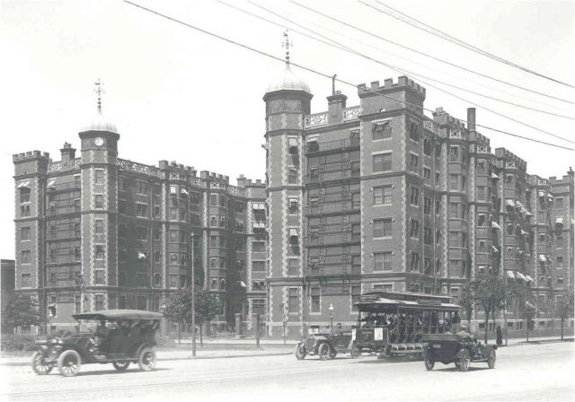

A more extensive History of Maseeh

2008: Community founded as Phoenix Group
In the spring of 2008, ten undergraduates from across campus met with housemasters Suzanne Flynn (Professor, Department of Linguistics and Philosophy) and Jack Carroll to form the incubator community for W1. The founders chose to call themselves The Phoenix Group to symbolize the rebirth of an undergraduate community from the 'ashes' of Ashdown, the name of W1 as a graduate community. During the summer, the graduate community moved from W1 to NW35, the new Ashdown, where it currently resides.
The founders met that spring to plan for their new community, making initial decisions about their living environment, providing preliminary input on design of the program space in W1, recruiting additional members to grow to 50 for their move to their temporary home, establishing a set of values for their new community, etc. That spring, then Dean of Student Life Larry Benedict sent seven of the Phoenix Group plus members of the development team to Cambridge University to learn about the Cambridge model for a living and learning environment by visiting and staying in several of the colleges. The repeated response from our Cambridge contacts about what made their colleges special focused on the critical integration of learning into the life of the college - “We're not just a dorm!”. That experience has been critical in setting the vision for Maseeh as an integrated living/learning community where experience on and beyond the MIT campus are integrated parts of the the life of the house.
The Founders Group consisted of Charles DeRobertis '10, Andrew Jones '10, Cecilia Louis '10, Stephan Hawthorne '11, Wayne Hollman '11, Aissata Nutzel '11, Andrew Sugaya '11, Karl Wolff '11, Moji Jimoh '12, Cydnie Trice '12, and Kristen Martinez. Karl Wolff was elected the first president of the group. Since the initial planning discussions, the Founders and housemasters have worked in close collaboration with Associate Dean of Student Life Donna Denoncourt,MIT's Program Manager for W1 renovations Sonia Richards, and architect for the renovation Dan Dyer and his team at Miller Dyer Spears in Boston.
2008 — 2011: Phoenix Group develops community in Ashdown
In the fall of 2008, the Phoenix Group grew to 50 members and, at the invitation of the Ashdown graduate community, moved into the new Ashdown House (NW35), a short distance across the railroad tracks behind Simmons Hall. In its first year, Karl Wolff led the house in the creation of a new committee-based government that emphasized community involvement and inclusion.
The fall of 2008 presented a significant challenge to the Phoenix Group since MIT responded to the economic downturn by postponing the development of W1 indefinitely. Serious questions were raised about disbanding the Phoenix Group and forming a new incubator community when W1 renovations were resumed. New Dean of Student Life Chris Colombo looked to the Phoenix Group to see what they wanted to do. Recognizing that possibly all of the founders would not get to move into W1 and that the time frame for resuming construction was indeterminate, the group responded by deciding to live together as a small living group until renovations resumed.
For two years, the Phoenix Group grew as a community - establishing traditions, welcoming new members, continuing to provide input to the W1 design team. Thanks to contributions from anonymous donors, the W1 project team was able to move forward with developing the plans for W1, secured the exterior of the building to protect it from the weather, and began to gut the interior, preserving historically important elements, but otherwise stripping the interior down to the underlying structure.
2010 — 2011: W1 Opens
In the fall of 2010, thanks to a very generous gift from Fariborz Maseeh (ScD. '90) that cappedMIT's fund raising efforts, construction of W1 resumed. Gifts along the way had enabled MIT, Shawmut Design and Construction (the renovations contractor), and Miller Dyer Spears (the architects) to continue working on the interior of the building, preparing for the full resumption of construction. During the fall, activity within the Phoenix Group also ramped up, capped by an on-campus retreat in October at which the group finalized its core vision for the Maseeh Hall community, identifying the type of community they wanted Maseeh Hall to become and establishing a set of core values to guide its development (see our mission page).
August 2011: Maseeh Hall opens with room for 462 residents